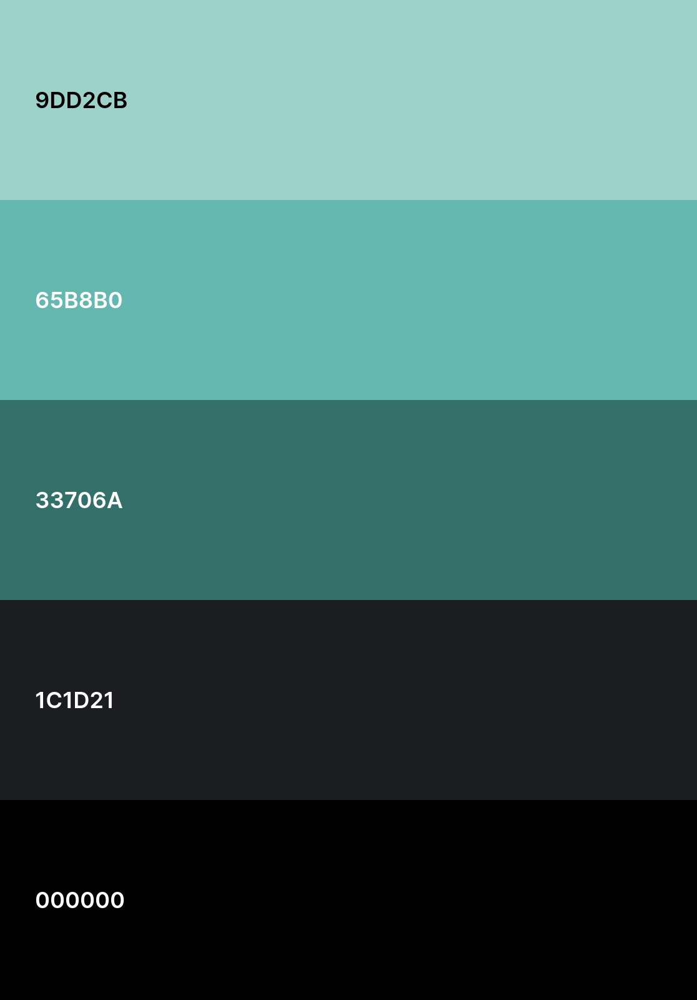

Font
The chosen font for the website is Poppins. It's a clean font that, to me feels inviting butnot too informal. It is legible, modern and quite simply my go-to font. since this website is aportayal of me, it only seemed fitting.
Colours
Initially, I had a selection of 6 vivid colours for my pallet. However, when trying to implement the pallet I realized that I had far too many colours. I decided to keep it simple and opted for a black and white scheme with a splash of accent colour every now and then. Crucially, the accent colours are all various shades of one base colour: teal.
Aesthetics
The website has a minimalist, dark background image by Freepik with all content being placed in bordered boxes. This aids user understandibility as all relevant objects are clearly demarcated. These boxes as well as the header and footer will have rounded corners to match the roundedness of the font. Generally, headers and short pieces of text will be center aligned just like all the boxes, while longer text pieces will be left aligned to aid readability. Intitially, the background was a solid black colour. The background images was added to lessen the harshness that the solid colour brought.